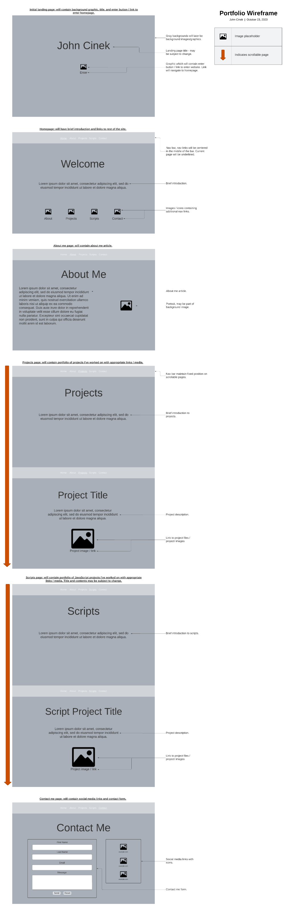
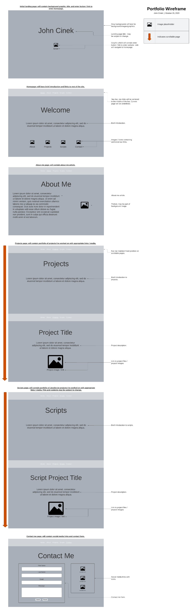

"A man who does not think and plan long ahead will find trouble right at his door." — Confucius.
No good project is ever completed without an outline of one's vision. Here, you can view the wireframe diagram I created for this site.
No good project is ever completed without an outline of one's vision. Here, you can view the wireframe diagram I created for this site.
